Exploratory analysis of CaCyBP and S100a6 expression in embryonic mice cortex dataset with focus on astrocytic lineage
Evgenii O. Tretiakov
2024-06-09
Last updated: 2024-06-09
Checks: 7 0
Knit directory: Cinquina_2024/
This reproducible R Markdown analysis was created with workflowr (version 1.7.1). The Checks tab describes the reproducibility checks that were applied when the results were created. The Past versions tab lists the development history.
Great! Since the R Markdown file has been committed to the Git repository, you know the exact version of the code that produced these results.
Great job! The global environment was empty. Objects defined in the global environment can affect the analysis in your R Markdown file in unknown ways. For reproduciblity it’s best to always run the code in an empty environment.
The command set.seed(20240320) was run prior to running
the code in the R Markdown file. Setting a seed ensures that any results
that rely on randomness, e.g. subsampling or permutations, are
reproducible.
Great job! Recording the operating system, R version, and package versions is critical for reproducibility.
Nice! There were no cached chunks for this analysis, so you can be confident that you successfully produced the results during this run.
Great job! Using relative paths to the files within your workflowr project makes it easier to run your code on other machines.
Great! You are using Git for version control. Tracking code development and connecting the code version to the results is critical for reproducibility.
The results in this page were generated with repository version 62900cf. See the Past versions tab to see a history of the changes made to the R Markdown and HTML files.
Note that you need to be careful to ensure that all relevant files for
the analysis have been committed to Git prior to generating the results
(you can use wflow_publish or
wflow_git_commit). workflowr only checks the R Markdown
file, but you know if there are other scripts or data files that it
depends on. Below is the status of the Git repository when the results
were generated:
Ignored files:
Ignored: .Rproj.user/
Ignored: data/SCP1290/
Ignored: data/azimuth_integrated.rds
Note that any generated files, e.g. HTML, png, CSS, etc., are not included in this status report because it is ok for generated content to have uncommitted changes.
These are the previous versions of the repository in which changes were
made to the R Markdown (analysis/cortex_visualisation.Rmd)
and HTML (docs/cortex_visualisation.html) files. If you’ve
configured a remote Git repository (see ?wflow_git_remote),
click on the hyperlinks in the table below to view the files as they
were in that past version.
| File | Version | Author | Date | Message |
|---|---|---|---|---|
| Rmd | 62900cf | Evgenii O. Tretiakov | 2024-06-09 | add header to fix vector output in pdf |
| Rmd | fd0e9b9 | Evgenii O. Tretiakov | 2024-06-09 | add visualisation of cortical data analysis of CaCyBP and S100a6 |
| html | fd0e9b9 | Evgenii O. Tretiakov | 2024-06-09 | add visualisation of cortical data analysis of CaCyBP and S100a6 |
# Create a vector with the stage of development for each object
stage_info <- c("E11.5", "E12.5", "E13.5", "E14.5", "E15.5", "E16", "E18.5", "E18", "P1", "P1", "E10", "E17.5", "P4")merged_cortex_2 <- SeuratObject::LoadSeuratRds(here::here("data/azimuth_integrated.rds"))
merged_cortex_2$cell_name <- Cells(merged_cortex_2)
merged_cortex_2An object of class Seurat
28186 features across 82415 samples within 5 assays
Active assay: RNA (27998 features, 2000 variable features)
25 layers present: data.E11.5, data.E12.5, data.E13.5, data.E14.5, data.E15.5, data.E16, data.E18.5, data.E18, data.P1, data.E10, data.E17.5, data.P4, scale.data, counts.E11.5, counts.E12.5, counts.E13.5, counts.E14.5, counts.E15.5, counts.E16, counts.E18.5, counts.E18, counts.P1, counts.E10, counts.E17.5, counts.P4
4 other assays present: prediction.score.class, prediction.score.cluster, prediction.score.subclass, prediction.score.cross_species_cluster
7 dimensional reductions calculated: pca, integrated_dr, ref.umap, integrated.cca, umap.cca, harmony, umap.harmonyorig_umap <- readr::read_tsv(
here("data/SCP1290/cluster/cluster_scDevSC.merged.umap.txt"),
skip = 2,
col_names = c("cell_name", "UMAP_1", "UMAP_2"),
col_types = list(col_character(), col_double(), col_double())
)
glimpse(orig_umap)Rows: 98,047
Columns: 3
$ cell_name <chr> "E10_v1_AAACCTGAGGGTCTCC-1", "E10_v1_AAACCTGCACAACGCC-1", "E…
$ UMAP_1 <dbl> -3.0025911, -3.6729214, -3.8859395, -3.9020242, -2.9312939, …
$ UMAP_2 <dbl> -10.453364, -6.552985, -10.773631, -10.869657, -10.769403, -…orig_umap %<>% tibble::column_to_rownames("cell_name")
orig_umap %<>% as.matrix()
orig_tsne <- readr::read_tsv(
here("data/SCP1290/cluster/cluster_scDevSC.merged.tsne.txt"),
skip = 2,
col_names = c("cell_name", "tSNE_1", "tSNE_2"),
col_types = list(col_character(), col_double(), col_double())
)
glimpse(orig_tsne)Rows: 98,047
Columns: 3
$ cell_name <chr> "E10_v1_AAACCTGAGGGTCTCC-1", "E10_v1_AAACCTGCACAACGCC-1", "E…
$ tSNE_1 <dbl> 15.442958, 10.373660, 14.828413, 16.307658, 18.062250, 13.72…
$ tSNE_2 <dbl> -19.603245, -17.062466, -20.102599, -20.003542, -18.636268, …orig_tsne %<>% tibble::column_to_rownames("cell_name")
orig_tsne %<>% as.matrix()
orig_metadata <- readr::read_tsv(here(
"data/SCP1290/metadata/metaData_scDevSC.txt"))
orig_metadata %<>% rename("cell_name" = "NAME")
orig_metadata_types <- orig_metadata[1,] |> purrr::simplify()
orig_metadata %<>% filter(!cell_name == "TYPE")
glimpse(orig_metadata)Rows: 98,047
Columns: 28
$ cell_name <chr> "E10_v1_AAACCTGAGGGTCTCC-…
$ orig_ident <chr> "E10", "E10", "E10", "E10…
$ nCount_RNA <chr> "1544", "1157", "2081", "…
$ nFeature_RNA <chr> "1022", "783", "1200", "1…
$ percent_mito <chr> "0.02007772", "0.01469317…
$ n_hkgene <chr> "51", "39", "67", "71", "…
$ S_Score <chr> "0.356987282", "0.4538538…
$ G2M_Score <chr> "0.330795055", "0.2605599…
$ Phase <chr> "S", "S", "S", "G2M", "S"…
$ CC_Difference <chr> "0.026192226", "0.1932938…
$ seurat_clusters <chr> "34", "34", "34", "37", "…
$ RNA_snn_res_1 <chr> "20", "20", "20", "20", "…
$ scrublet_doublet <chr> "FALSE", "FALSE", "FALSE"…
$ RNA_snn_res_2 <chr> "34", "34", "34", "37", "…
$ Doublet_intersect <chr> NA, NA, NA, NA, NA, NA, N…
$ Gral_cellType <chr> NA, NA, NA, NA, NA, NA, N…
$ New_cellType <chr> "Apical progenitors", "In…
$ biosample_id <chr> "E10", "E10", "E10", "E10…
$ donor_id <chr> "mouse_E10", "mouse_E10",…
$ species <chr> "NCBITaxon_10090", "NCBIT…
$ disease <chr> "PATO_0000461", "PATO_000…
$ disease__ontology_label <chr> "normal", "normal", "norm…
$ organ <chr> "UBERON_0008930", "UBERON…
$ organ__ontology_label <chr> "somatosensory cortex", "…
$ library_preparation_protocol <chr> "EFO_0009899", "EFO_00098…
$ library_preparation_protocol__ontology_label <chr> "10X 3' v2 sequencing", "…
$ sex <chr> "mixed", "mixed", "mixed"…
$ species__ontology_label <chr> "Mus musculus", "Mus musc…change_column_types <- function(df, types) {
for (col_name in names(types)) {
col_type <- types[col_name]
if (col_type == "character") {
df[[col_name]] <- as.character(df[[col_name]])
} else if (col_type == "numeric") {
df[[col_name]] <- as.numeric(df[[col_name]])
} else if (col_type == "integer") {
df[[col_name]] <- as.integer(df[[col_name]])
} else if (col_type == "logical") {
df[[col_name]] <- as.logical(df[[col_name]])
} else if (col_type == "factor") {
df[[col_name]] <- as.factor(df[[col_name]])
} else if (col_type == "group") {
df[[col_name]] <- as.factor(df[[col_name]])
} else {
warning(paste("Unknown type:", col_type, "for column", col_name))
}
}
return(df)
}
# Apply the function to the metadata
orig_metadata <- change_column_types(orig_metadata, orig_metadata_types)
# Print the modified metadata
glimpse(orig_metadata)Rows: 98,047
Columns: 28
$ cell_name <chr> "E10_v1_AAACCTGAGGGTCTCC-…
$ orig_ident <fct> E10, E10, E10, E10, E10, …
$ nCount_RNA <dbl> 1544, 1157, 2081, 2490, 2…
$ nFeature_RNA <dbl> 1022, 783, 1200, 1430, 14…
$ percent_mito <dbl> 0.020077720, 0.014693172,…
$ n_hkgene <dbl> 51, 39, 67, 71, 70, 50, 4…
$ S_Score <dbl> 0.35698728, 0.45385381, 0…
$ G2M_Score <dbl> 0.33079506, 0.26055995, 0…
$ Phase <fct> S, S, S, G2M, S, S, S, S,…
$ CC_Difference <dbl> 0.026192226, 0.193293862,…
$ seurat_clusters <fct> 34, 34, 34, 37, 37, 34, 4…
$ RNA_snn_res_1 <fct> 20, 20, 20, 20, 20, 20, 3…
$ scrublet_doublet <fct> FALSE, FALSE, FALSE, FALS…
$ RNA_snn_res_2 <fct> 34, 34, 34, 37, 37, 34, 4…
$ Doublet_intersect <fct> NA, NA, NA, NA, NA, NA, N…
$ Gral_cellType <fct> NA, NA, NA, NA, NA, NA, N…
$ New_cellType <fct> Apical progenitors, Inter…
$ biosample_id <fct> E10, E10, E10, E10, E10, …
$ donor_id <fct> mouse_E10, mouse_E10, mou…
$ species <fct> NCBITaxon_10090, NCBITaxo…
$ disease <fct> PATO_0000461, PATO_000046…
$ disease__ontology_label <fct> normal, normal, normal, n…
$ organ <fct> UBERON_0008930, UBERON_00…
$ organ__ontology_label <fct> somatosensory cortex, som…
$ library_preparation_protocol <fct> EFO_0009899, EFO_0009899,…
$ library_preparation_protocol__ontology_label <fct> 10X 3' v2 sequencing, 10X…
$ sex <fct> mixed, mixed, mixed, mixe…
$ species__ontology_label <fct> Mus musculus, Mus musculu…orig_srt <- Read10X(data.dir = here("data/SCP1290/expression/601ae2f4771a5b0d72588bfb"))
# Convert the log1p normalized matrix to a standard matrix if it's not already
normalized_matrix <- as.matrix(orig_srt)
# Reverse the log1p transformation to get the count matrix
count_matrix <- expm1(normalized_matrix)
# Convert the count matrix to a sparse matrix format (dgCMatrix) if needed
count_matrix_sparse <- as(count_matrix, "dgCMatrix")
# Create a Seurat object using the recovered count matrix
merged_cortex <- CreateSeuratObject(counts = count_matrix_sparse, meta.data = orig_metadata)
merged_cortex[["umap"]] <- CreateDimReducObject(embeddings = orig_umap, key = "UMAP_", assay = DefaultAssay(merged_cortex))
merged_cortex[["tsne"]] <- CreateDimReducObject(embeddings = orig_tsne, key = "tSNE_", assay = DefaultAssay(merged_cortex))
merged_cortex$stage <- merged_cortex$orig.ident
table(merged_cortex$New_cellType)
Apical progenitors Astrocytes Cajal Retzius cells
18491 2976 532
CThPN Cycling glial cells DL CPN
4607 1004 3106
DL_CPN_1 DL_CPN_2 Doublet
422 146 1854
Endothelial cells Ependymocytes Immature neurons
291 35 3092
Intermediate progenitors Interneurons Layer 4
8490 10469 5317
Layer 6b Low quality cells Microglia
194 4545 263
Migrating neurons NP Oligodendrocytes
12332 424 1098
Pericytes Red blood cells SCPN
236 330 2987
UL CPN VLMC
14041 765 Idents(merged_cortex) <- "New_cellType"
merged_cortex <- subset(merged_cortex, idents = c("Doublet", "Low quality cells", "Red blood cells"), invert = TRUE)
merged_cortex <-
Store_Palette_Seurat(
seurat_object = merged_cortex,
palette = rev(brewer.pal(n = 11, name = "Spectral")),
palette_name = "expr_Colour_Pal"
)
# Get the list of S100 family genes
s100_genes <- grep("^S100", rownames(merged_cortex), value = TRUE)
genes.embed <- c(
"Abcd1",
"Abcd2",
"Abcd3",
"Acaa1",
"Acaa2",
"Acox1",
"Agrn",
"Agt",
"Alcam",
"Aldh1a1",
"Aldh1l1",
"Aldoc",
"Angpt1",
"Apoe",
"App",
"Aqp4",
"Arf1",
"Bmp7",
"Bsg",
"Cacybp",
"Caf4",
"Ccl25",
"Ckb",
"Cnr1",
"Cnr2",
"Col4a5",
"Cst3",
"Dagla",
"Daglb",
"Decr2",
"Dcc",
"Dnm1",
"Drp1",
"Ech1",
"Efna5",
"Egfr",
"Enho",
"Eno1",
"Faah",
"Fgf1",
"Fgfr3",
"Fis1",
"Fos",
"Fth1",
"Ftl1",
"Gfap",
"Gja1",
"Gli1",
"Glul",
"Gnai2",
"Gnas",
"H2-K1",
"Hacd2",
"Hadhb",
"Hbegf",
"Hepacam",
"Hif1",
"Htra1",
"Igsf1",
"Il18",
"Il1rapl1",
"Itgav",
"Jam2",
"Lama2",
"Lamb2",
"Lcat",
"Lgi1",
"Lgi4",
"Lpcat3",
"Lrpap1",
"Lrrc4b",
"Lxn",
"Mdk",
"Mdv1",
"Mfn1",
"Mfn2",
"Mgll",
"Mief1",
"Napepld",
"Ncam1",
"Ncan",
"Ndrg2",
"Nfasc",
"Nfia",
"Nlgn3",
"Nrxn1",
"Nrxn2",
"Ntn1",
"Ntrk3",
"Opa1",
"Otp",
"Pex1",
"Pex10",
"Pex12",
"Pex13",
"Pex14",
"Pex16",
"Pex2",
"Pex26",
"Pex3",
"Pex6",
"Pkm",
"Pla2g7",
"Plcb1",
"Psap",
"Ptn",
"Pygb",
"Ralyl",
"Rgma",
"Rtn4",
"S100a1",
"S100a6",
"S100b",
"Siah1a",
"Siah1b",
"Scd2",
"Sdc2",
"Sema6a",
"Sema6d",
"Sgcd",
"Sirpa",
"Slc1a2",
"Slc1a3",
"Slc38a1",
"Slc4a4",
"Slc6a11",
"Slc7a10",
"Slit1",
"Slit2",
"Slitrk2",
"Sorbs1",
"Sox9",
"Sparc",
"Spon1",
"Tafa1",
"Timp3",
"Tkt",
"Trpv1",
"Vcam1",
"Vegfa"
) %>% .[. %in% rownames(merged_cortex)]
merged_cortex <- FindVariableFeatures(merged_cortex, nfeatures = 5000, verbose = FALSE)
merged_cortex <- NormalizeData(
merged_cortex,
features = c(
VariableFeatures(merged_cortex),
s100_genes,
genes.embed),
verbose = FALSE)
# Scale data
merged_cortex <- ScaleData(
merged_cortex,
features = c(
VariableFeatures(merged_cortex),
s100_genes,
genes.embed),
verbose = FALSE)# Create DimPlot
p1 <- DimPlot(
merged_cortex,
reduction = "umap",
group.by = c("stage", "New_cellType"),
combine = FALSE, label.size = 2
)
p2 <- DimPlot(
merged_cortex,
reduction = "tsne",
group.by = c("stage", "New_cellType"),
combine = FALSE, label.size = 2
)wrap_plots(c(p1, p2), ncol = 2, byrow = F)
| Version | Author | Date |
|---|---|---|
| fd0e9b9 | Evgenii O. Tretiakov | 2024-06-09 |
# Create a custom FeaturePlot for each S100 gene
plot_list <-
lapply(
c(s100_genes, "Cacybp", "Siah1a", "Siah1b"),
function(gene) {
FeaturePlot_scCustom(
seurat_object = merged_cortex,
features = gene,
colors_use = merged_cortex@misc$expr_Colour_Pal,
na_color = "lightgray",
layer = "data",
order = TRUE,
pt.size = 1,
reduction = "umap",
split.by = "stage",
split_collect = FALSE,
label = F,
label_feature_yaxis = TRUE,
combine = FALSE
)
})
# Combine the plots into a single grid
combined_plot <- patchwork::wrap_plots(plot_list, ncol = 1)
# Display the combined plot
print(combined_plot)
| Version | Author | Date |
|---|---|---|
| fd0e9b9 | Evgenii O. Tretiakov | 2024-06-09 |
# Create a compact DotPlot
compact_plot <- DotPlot(
object = merged_cortex,
features = c(s100_genes,
"Cacybp",
"Siah1a",
"Siah1b"),
group.by = "stage",
cluster.idents = FALSE,
scale = TRUE,
dot.scale = 12
) + RotatedAxis()
# Display the compact plot
print(compact_plot)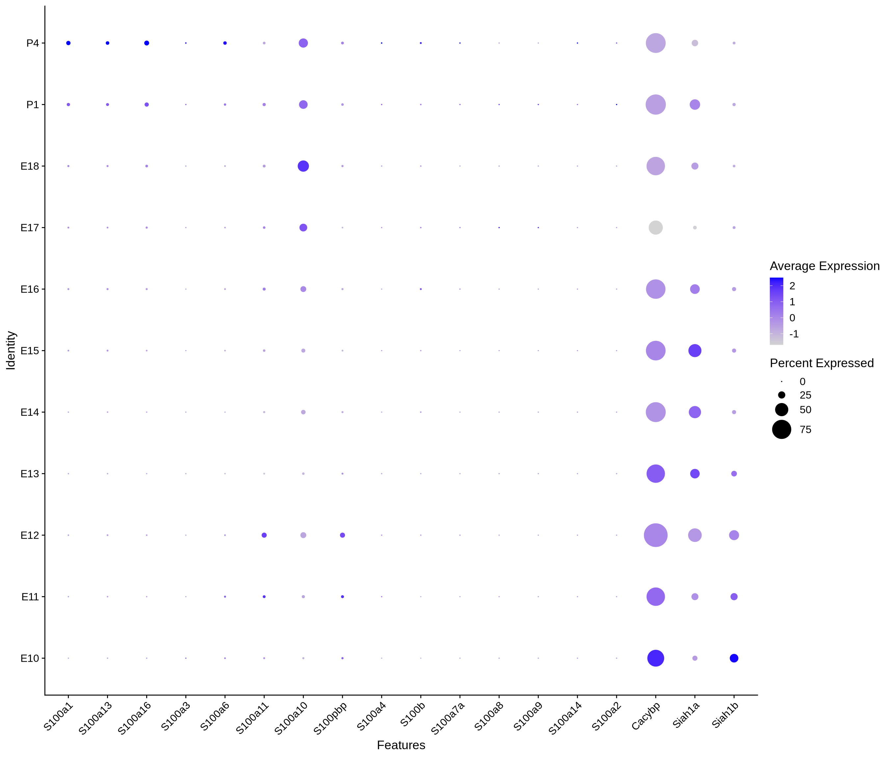
| Version | Author | Date |
|---|---|---|
| fd0e9b9 | Evgenii O. Tretiakov | 2024-06-09 |
plot_gene_by_dev <- function(x) {
f_plot <- FeaturePlot_scCustom(
merged_cortex,
colors_use = merged_cortex@misc$expr_Colour_Pal,
features = x,
layer = "data",
max.cutoff = "q99",
na_color = "lightgray",
figure_plot = T,
pt.size = 1,
reduction = "umap",
split.by = "stage",
split_collect = FALSE,
label = F,
label_feature_yaxis = TRUE,
combine = FALSE
)
print(f_plot)
}
genes.embed |> purrr::walk(plot_gene_by_dev)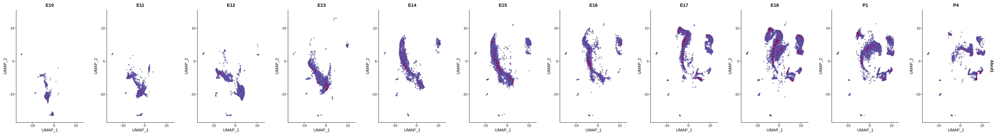
| Version | Author | Date |
|---|---|---|
| fd0e9b9 | Evgenii O. Tretiakov | 2024-06-09 |
| Version | Author | Date |
|---|---|---|
| fd0e9b9 | Evgenii O. Tretiakov | 2024-06-09 |
| Version | Author | Date |
|---|---|---|
| fd0e9b9 | Evgenii O. Tretiakov | 2024-06-09 |
| Version | Author | Date |
|---|---|---|
| fd0e9b9 | Evgenii O. Tretiakov | 2024-06-09 |

| Version | Author | Date |
|---|---|---|
| fd0e9b9 | Evgenii O. Tretiakov | 2024-06-09 |

| Version | Author | Date |
|---|---|---|
| fd0e9b9 | Evgenii O. Tretiakov | 2024-06-09 |

| Version | Author | Date |
|---|---|---|
| fd0e9b9 | Evgenii O. Tretiakov | 2024-06-09 |
| Version | Author | Date |
|---|---|---|
| fd0e9b9 | Evgenii O. Tretiakov | 2024-06-09 |
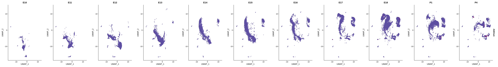
| Version | Author | Date |
|---|---|---|
| fd0e9b9 | Evgenii O. Tretiakov | 2024-06-09 |
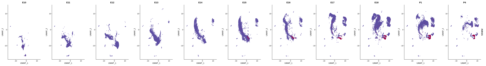
| Version | Author | Date |
|---|---|---|
| fd0e9b9 | Evgenii O. Tretiakov | 2024-06-09 |

| Version | Author | Date |
|---|---|---|
| fd0e9b9 | Evgenii O. Tretiakov | 2024-06-09 |
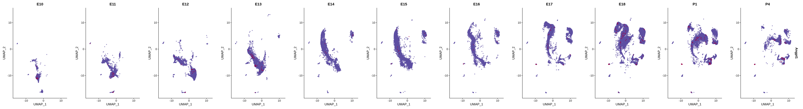
| Version | Author | Date |
|---|---|---|
| fd0e9b9 | Evgenii O. Tretiakov | 2024-06-09 |
| Version | Author | Date |
|---|---|---|
| fd0e9b9 | Evgenii O. Tretiakov | 2024-06-09 |

| Version | Author | Date |
|---|---|---|
| fd0e9b9 | Evgenii O. Tretiakov | 2024-06-09 |
| Version | Author | Date |
|---|---|---|
| fd0e9b9 | Evgenii O. Tretiakov | 2024-06-09 |
| Version | Author | Date |
|---|---|---|
| fd0e9b9 | Evgenii O. Tretiakov | 2024-06-09 |
| Version | Author | Date |
|---|---|---|
| fd0e9b9 | Evgenii O. Tretiakov | 2024-06-09 |
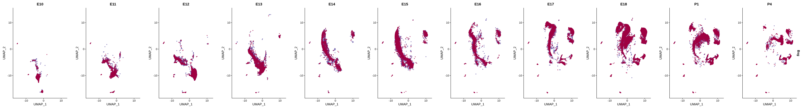
| Version | Author | Date |
|---|---|---|
| fd0e9b9 | Evgenii O. Tretiakov | 2024-06-09 |

| Version | Author | Date |
|---|---|---|
| fd0e9b9 | Evgenii O. Tretiakov | 2024-06-09 |
| Version | Author | Date |
|---|---|---|
| fd0e9b9 | Evgenii O. Tretiakov | 2024-06-09 |
| Version | Author | Date |
|---|---|---|
| fd0e9b9 | Evgenii O. Tretiakov | 2024-06-09 |
| Version | Author | Date |
|---|---|---|
| fd0e9b9 | Evgenii O. Tretiakov | 2024-06-09 |
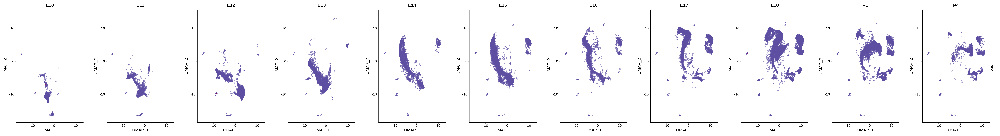
| Version | Author | Date |
|---|---|---|
| fd0e9b9 | Evgenii O. Tretiakov | 2024-06-09 |
| Version | Author | Date |
|---|---|---|
| fd0e9b9 | Evgenii O. Tretiakov | 2024-06-09 |

| Version | Author | Date |
|---|---|---|
| fd0e9b9 | Evgenii O. Tretiakov | 2024-06-09 |

| Version | Author | Date |
|---|---|---|
| fd0e9b9 | Evgenii O. Tretiakov | 2024-06-09 |
| Version | Author | Date |
|---|---|---|
| fd0e9b9 | Evgenii O. Tretiakov | 2024-06-09 |

| Version | Author | Date |
|---|---|---|
| fd0e9b9 | Evgenii O. Tretiakov | 2024-06-09 |
| Version | Author | Date |
|---|---|---|
| fd0e9b9 | Evgenii O. Tretiakov | 2024-06-09 |

| Version | Author | Date |
|---|---|---|
| fd0e9b9 | Evgenii O. Tretiakov | 2024-06-09 |

| Version | Author | Date |
|---|---|---|
| fd0e9b9 | Evgenii O. Tretiakov | 2024-06-09 |
| Version | Author | Date |
|---|---|---|
| fd0e9b9 | Evgenii O. Tretiakov | 2024-06-09 |
| Version | Author | Date |
|---|---|---|
| fd0e9b9 | Evgenii O. Tretiakov | 2024-06-09 |

| Version | Author | Date |
|---|---|---|
| fd0e9b9 | Evgenii O. Tretiakov | 2024-06-09 |
| Version | Author | Date |
|---|---|---|
| fd0e9b9 | Evgenii O. Tretiakov | 2024-06-09 |
| Version | Author | Date |
|---|---|---|
| fd0e9b9 | Evgenii O. Tretiakov | 2024-06-09 |
| Version | Author | Date |
|---|---|---|
| fd0e9b9 | Evgenii O. Tretiakov | 2024-06-09 |

| Version | Author | Date |
|---|---|---|
| fd0e9b9 | Evgenii O. Tretiakov | 2024-06-09 |

| Version | Author | Date |
|---|---|---|
| fd0e9b9 | Evgenii O. Tretiakov | 2024-06-09 |
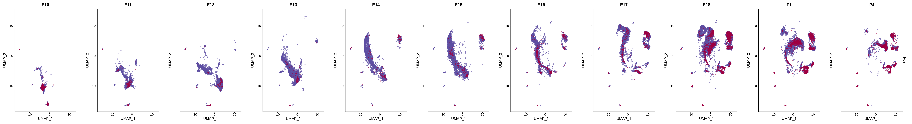
| Version | Author | Date |
|---|---|---|
| fd0e9b9 | Evgenii O. Tretiakov | 2024-06-09 |
| Version | Author | Date |
|---|---|---|
| fd0e9b9 | Evgenii O. Tretiakov | 2024-06-09 |
| Version | Author | Date |
|---|---|---|
| fd0e9b9 | Evgenii O. Tretiakov | 2024-06-09 |
| Version | Author | Date |
|---|---|---|
| fd0e9b9 | Evgenii O. Tretiakov | 2024-06-09 |
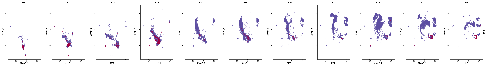
| Version | Author | Date |
|---|---|---|
| fd0e9b9 | Evgenii O. Tretiakov | 2024-06-09 |

| Version | Author | Date |
|---|---|---|
| fd0e9b9 | Evgenii O. Tretiakov | 2024-06-09 |

| Version | Author | Date |
|---|---|---|
| fd0e9b9 | Evgenii O. Tretiakov | 2024-06-09 |

| Version | Author | Date |
|---|---|---|
| fd0e9b9 | Evgenii O. Tretiakov | 2024-06-09 |
| Version | Author | Date |
|---|---|---|
| fd0e9b9 | Evgenii O. Tretiakov | 2024-06-09 |
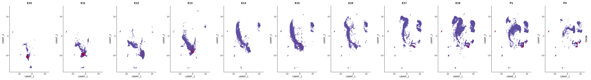
| Version | Author | Date |
|---|---|---|
| fd0e9b9 | Evgenii O. Tretiakov | 2024-06-09 |
| Version | Author | Date |
|---|---|---|
| fd0e9b9 | Evgenii O. Tretiakov | 2024-06-09 |

| Version | Author | Date |
|---|---|---|
| fd0e9b9 | Evgenii O. Tretiakov | 2024-06-09 |
| Version | Author | Date |
|---|---|---|
| fd0e9b9 | Evgenii O. Tretiakov | 2024-06-09 |

| Version | Author | Date |
|---|---|---|
| fd0e9b9 | Evgenii O. Tretiakov | 2024-06-09 |

| Version | Author | Date |
|---|---|---|
| fd0e9b9 | Evgenii O. Tretiakov | 2024-06-09 |

| Version | Author | Date |
|---|---|---|
| fd0e9b9 | Evgenii O. Tretiakov | 2024-06-09 |

| Version | Author | Date |
|---|---|---|
| fd0e9b9 | Evgenii O. Tretiakov | 2024-06-09 |
| Version | Author | Date |
|---|---|---|
| fd0e9b9 | Evgenii O. Tretiakov | 2024-06-09 |
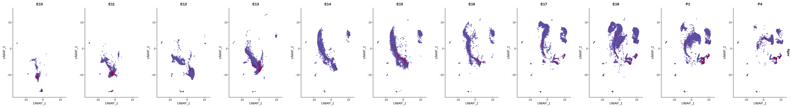
| Version | Author | Date |
|---|---|---|
| fd0e9b9 | Evgenii O. Tretiakov | 2024-06-09 |
| Version | Author | Date |
|---|---|---|
| fd0e9b9 | Evgenii O. Tretiakov | 2024-06-09 |
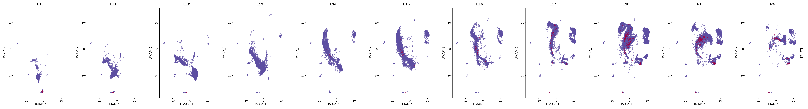
| Version | Author | Date |
|---|---|---|
| fd0e9b9 | Evgenii O. Tretiakov | 2024-06-09 |

| Version | Author | Date |
|---|---|---|
| fd0e9b9 | Evgenii O. Tretiakov | 2024-06-09 |
| Version | Author | Date |
|---|---|---|
| fd0e9b9 | Evgenii O. Tretiakov | 2024-06-09 |
| Version | Author | Date |
|---|---|---|
| fd0e9b9 | Evgenii O. Tretiakov | 2024-06-09 |

| Version | Author | Date |
|---|---|---|
| fd0e9b9 | Evgenii O. Tretiakov | 2024-06-09 |
| Version | Author | Date |
|---|---|---|
| fd0e9b9 | Evgenii O. Tretiakov | 2024-06-09 |
| Version | Author | Date |
|---|---|---|
| fd0e9b9 | Evgenii O. Tretiakov | 2024-06-09 |

| Version | Author | Date |
|---|---|---|
| fd0e9b9 | Evgenii O. Tretiakov | 2024-06-09 |
| Version | Author | Date |
|---|---|---|
| fd0e9b9 | Evgenii O. Tretiakov | 2024-06-09 |

| Version | Author | Date |
|---|---|---|
| fd0e9b9 | Evgenii O. Tretiakov | 2024-06-09 |

| Version | Author | Date |
|---|---|---|
| fd0e9b9 | Evgenii O. Tretiakov | 2024-06-09 |

| Version | Author | Date |
|---|---|---|
| fd0e9b9 | Evgenii O. Tretiakov | 2024-06-09 |

| Version | Author | Date |
|---|---|---|
| fd0e9b9 | Evgenii O. Tretiakov | 2024-06-09 |

| Version | Author | Date |
|---|---|---|
| fd0e9b9 | Evgenii O. Tretiakov | 2024-06-09 |
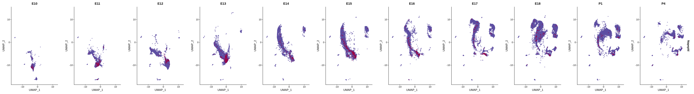
| Version | Author | Date |
|---|---|---|
| fd0e9b9 | Evgenii O. Tretiakov | 2024-06-09 |
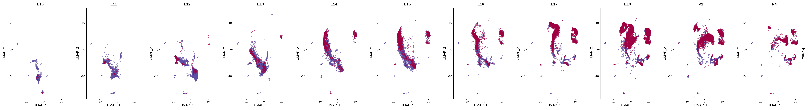
| Version | Author | Date |
|---|---|---|
| fd0e9b9 | Evgenii O. Tretiakov | 2024-06-09 |

| Version | Author | Date |
|---|---|---|
| fd0e9b9 | Evgenii O. Tretiakov | 2024-06-09 |

| Version | Author | Date |
|---|---|---|
| fd0e9b9 | Evgenii O. Tretiakov | 2024-06-09 |
| Version | Author | Date |
|---|---|---|
| fd0e9b9 | Evgenii O. Tretiakov | 2024-06-09 |

| Version | Author | Date |
|---|---|---|
| fd0e9b9 | Evgenii O. Tretiakov | 2024-06-09 |

| Version | Author | Date |
|---|---|---|
| fd0e9b9 | Evgenii O. Tretiakov | 2024-06-09 |
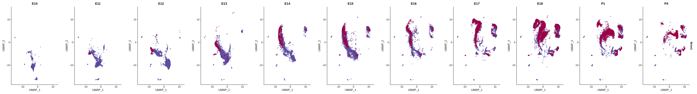
| Version | Author | Date |
|---|---|---|
| fd0e9b9 | Evgenii O. Tretiakov | 2024-06-09 |

| Version | Author | Date |
|---|---|---|
| fd0e9b9 | Evgenii O. Tretiakov | 2024-06-09 |
| Version | Author | Date |
|---|---|---|
| fd0e9b9 | Evgenii O. Tretiakov | 2024-06-09 |

| Version | Author | Date |
|---|---|---|
| fd0e9b9 | Evgenii O. Tretiakov | 2024-06-09 |

| Version | Author | Date |
|---|---|---|
| fd0e9b9 | Evgenii O. Tretiakov | 2024-06-09 |

| Version | Author | Date |
|---|---|---|
| fd0e9b9 | Evgenii O. Tretiakov | 2024-06-09 |

| Version | Author | Date |
|---|---|---|
| fd0e9b9 | Evgenii O. Tretiakov | 2024-06-09 |

| Version | Author | Date |
|---|---|---|
| fd0e9b9 | Evgenii O. Tretiakov | 2024-06-09 |

| Version | Author | Date |
|---|---|---|
| fd0e9b9 | Evgenii O. Tretiakov | 2024-06-09 |
| Version | Author | Date |
|---|---|---|
| fd0e9b9 | Evgenii O. Tretiakov | 2024-06-09 |
| Version | Author | Date |
|---|---|---|
| fd0e9b9 | Evgenii O. Tretiakov | 2024-06-09 |

| Version | Author | Date |
|---|---|---|
| fd0e9b9 | Evgenii O. Tretiakov | 2024-06-09 |

| Version | Author | Date |
|---|---|---|
| fd0e9b9 | Evgenii O. Tretiakov | 2024-06-09 |
| Version | Author | Date |
|---|---|---|
| fd0e9b9 | Evgenii O. Tretiakov | 2024-06-09 |

| Version | Author | Date |
|---|---|---|
| fd0e9b9 | Evgenii O. Tretiakov | 2024-06-09 |

| Version | Author | Date |
|---|---|---|
| fd0e9b9 | Evgenii O. Tretiakov | 2024-06-09 |

| Version | Author | Date |
|---|---|---|
| fd0e9b9 | Evgenii O. Tretiakov | 2024-06-09 |

| Version | Author | Date |
|---|---|---|
| fd0e9b9 | Evgenii O. Tretiakov | 2024-06-09 |
| Version | Author | Date |
|---|---|---|
| fd0e9b9 | Evgenii O. Tretiakov | 2024-06-09 |
| Version | Author | Date |
|---|---|---|
| fd0e9b9 | Evgenii O. Tretiakov | 2024-06-09 |

| Version | Author | Date |
|---|---|---|
| fd0e9b9 | Evgenii O. Tretiakov | 2024-06-09 |
| Version | Author | Date |
|---|---|---|
| fd0e9b9 | Evgenii O. Tretiakov | 2024-06-09 |
| Version | Author | Date |
|---|---|---|
| fd0e9b9 | Evgenii O. Tretiakov | 2024-06-09 |
| Version | Author | Date |
|---|---|---|
| fd0e9b9 | Evgenii O. Tretiakov | 2024-06-09 |
| Version | Author | Date |
|---|---|---|
| fd0e9b9 | Evgenii O. Tretiakov | 2024-06-09 |
| Version | Author | Date |
|---|---|---|
| fd0e9b9 | Evgenii O. Tretiakov | 2024-06-09 |
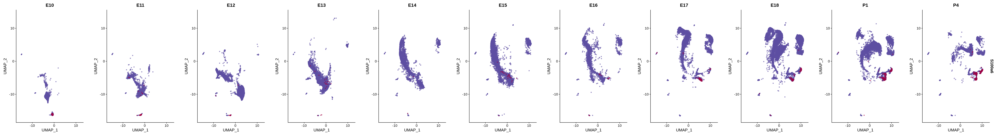
| Version | Author | Date |
|---|---|---|
| fd0e9b9 | Evgenii O. Tretiakov | 2024-06-09 |
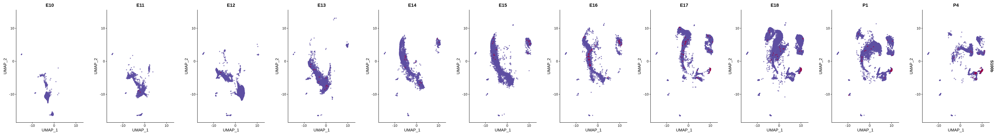
| Version | Author | Date |
|---|---|---|
| fd0e9b9 | Evgenii O. Tretiakov | 2024-06-09 |
| Version | Author | Date |
|---|---|---|
| fd0e9b9 | Evgenii O. Tretiakov | 2024-06-09 |
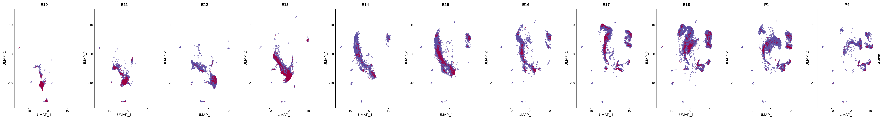
| Version | Author | Date |
|---|---|---|
| fd0e9b9 | Evgenii O. Tretiakov | 2024-06-09 |
| Version | Author | Date |
|---|---|---|
| fd0e9b9 | Evgenii O. Tretiakov | 2024-06-09 |
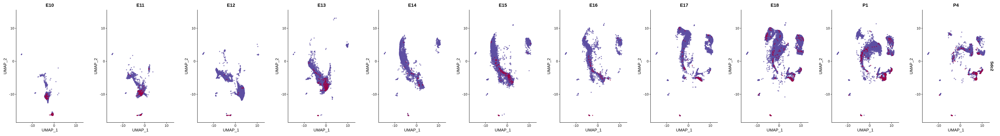
| Version | Author | Date |
|---|---|---|
| fd0e9b9 | Evgenii O. Tretiakov | 2024-06-09 |

| Version | Author | Date |
|---|---|---|
| fd0e9b9 | Evgenii O. Tretiakov | 2024-06-09 |

| Version | Author | Date |
|---|---|---|
| fd0e9b9 | Evgenii O. Tretiakov | 2024-06-09 |

| Version | Author | Date |
|---|---|---|
| fd0e9b9 | Evgenii O. Tretiakov | 2024-06-09 |
| Version | Author | Date |
|---|---|---|
| fd0e9b9 | Evgenii O. Tretiakov | 2024-06-09 |

| Version | Author | Date |
|---|---|---|
| fd0e9b9 | Evgenii O. Tretiakov | 2024-06-09 |
| Version | Author | Date |
|---|---|---|
| fd0e9b9 | Evgenii O. Tretiakov | 2024-06-09 |
| Version | Author | Date |
|---|---|---|
| fd0e9b9 | Evgenii O. Tretiakov | 2024-06-09 |

| Version | Author | Date |
|---|---|---|
| fd0e9b9 | Evgenii O. Tretiakov | 2024-06-09 |
| Version | Author | Date |
|---|---|---|
| fd0e9b9 | Evgenii O. Tretiakov | 2024-06-09 |
| Version | Author | Date |
|---|---|---|
| fd0e9b9 | Evgenii O. Tretiakov | 2024-06-09 |
| Version | Author | Date |
|---|---|---|
| fd0e9b9 | Evgenii O. Tretiakov | 2024-06-09 |
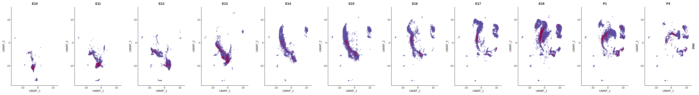
| Version | Author | Date |
|---|---|---|
| fd0e9b9 | Evgenii O. Tretiakov | 2024-06-09 |

| Version | Author | Date |
|---|---|---|
| fd0e9b9 | Evgenii O. Tretiakov | 2024-06-09 |

| Version | Author | Date |
|---|---|---|
| fd0e9b9 | Evgenii O. Tretiakov | 2024-06-09 |

| Version | Author | Date |
|---|---|---|
| fd0e9b9 | Evgenii O. Tretiakov | 2024-06-09 |
| Version | Author | Date |
|---|---|---|
| fd0e9b9 | Evgenii O. Tretiakov | 2024-06-09 |
| Version | Author | Date |
|---|---|---|
| fd0e9b9 | Evgenii O. Tretiakov | 2024-06-09 |
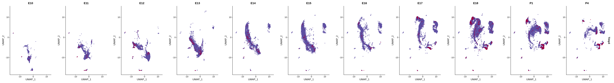
| Version | Author | Date |
|---|---|---|
| fd0e9b9 | Evgenii O. Tretiakov | 2024-06-09 |

| Version | Author | Date |
|---|---|---|
| fd0e9b9 | Evgenii O. Tretiakov | 2024-06-09 |
| Version | Author | Date |
|---|---|---|
| fd0e9b9 | Evgenii O. Tretiakov | 2024-06-09 |

| Version | Author | Date |
|---|---|---|
| fd0e9b9 | Evgenii O. Tretiakov | 2024-06-09 |
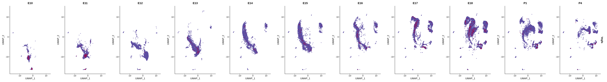
| Version | Author | Date |
|---|---|---|
| fd0e9b9 | Evgenii O. Tretiakov | 2024-06-09 |
astro <- subset(
x = merged_cortex,
subset = New_cellType == c("Apical progenitors",
"Cycling glial cells",
"Astrocytes"))
astro <- FindVariableFeatures(astro, nfeatures = 5000, verbose = FALSE)
# Scale data
astro <- ScaleData(
astro,
features = c(
VariableFeatures(astro),
s100_genes,
genes.embed),
verbose = FALSE)
# Run PCA
astro <- RunPCA(astro, verbose = FALSE)
# Find neighbors
astro <- FindNeighbors(astro, reduction = "pca", dims = 1:30)
# Find clusters
astro <- FindClusters(astro, resolution = 0.7, cluster.name = "astro_clusters", algorithm = 4, random.seed = 42)# Create DimPlot
p1 <- DimPlot(
astro,
reduction = "umap",
group.by = c("stage", "New_cellType"),
combine = FALSE, label.size = 2
)
p2 <- DimPlot(
astro,
reduction = "tsne",
group.by = c("stage", "New_cellType"),
combine = FALSE, label.size = 2
)wrap_plots(c(p1, p2), ncol = 2, byrow = F)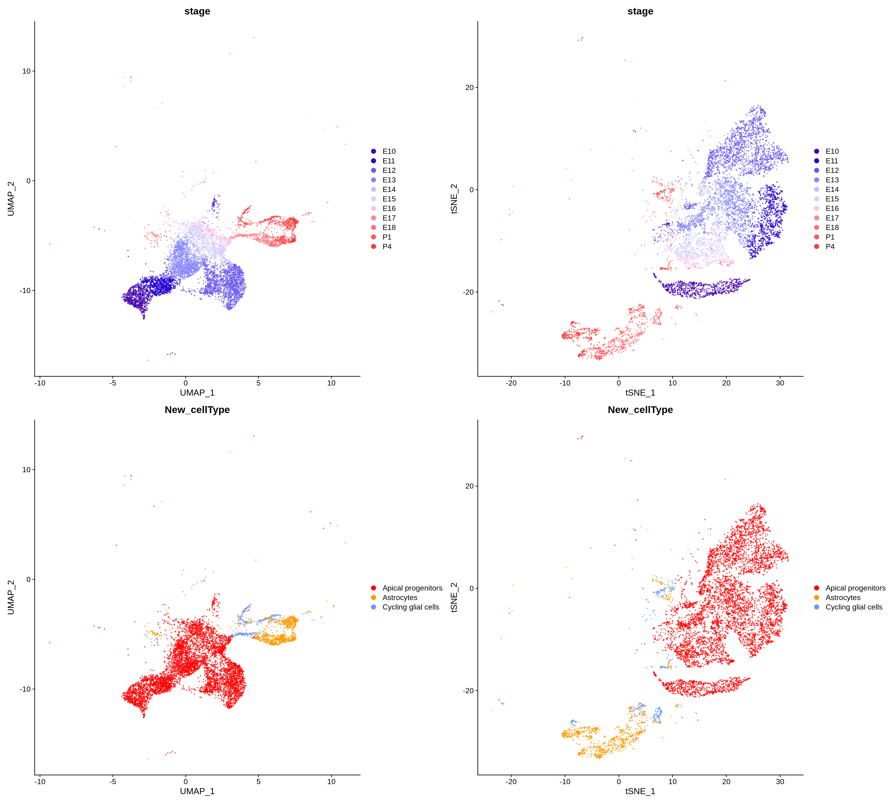
| Version | Author | Date |
|---|---|---|
| fd0e9b9 | Evgenii O. Tretiakov | 2024-06-09 |
DimPlot(
astro,
reduction = "umap",
group.by = c("astro_clusters"),
combine = FALSE, label.size = 2,
label = T
)[[1]]
| Version | Author | Date |
|---|---|---|
| fd0e9b9 | Evgenii O. Tretiakov | 2024-06-09 |
# Create a custom FeaturePlot for each S100 gene
# plot_list <-
# lapply(
# c(s100_genes, "Cacybp", "Siah1a", "Siah1b"),
# function(gene) {
# FeaturePlot_scCustom(
# seurat_object = astro,
# features = gene,
# colors_use = merged_cortex@misc$expr_Colour_Pal,
# na_color = "lightgray",
# layer = "data",
# order = TRUE,
# pt.size = 1,
# reduction = "umap",
# split.by = "stage",
# split_collect = FALSE,
# label = F,
# label_feature_yaxis = TRUE,
# combine = FALSE
# )
# })
#
#
# # Combine the plots into a single grid
# combined_plot <- patchwork::wrap_plots(plot_list, ncol = 1)
#
# # Display the combined plot
# print(combined_plot)# Create a compact DotPlot
compact_plot <- DotPlot(
object = astro,
features = c(s100_genes,
"Cacybp",
"Siah1a",
"Siah1b"),
group.by = "stage",
cluster.idents = F,
scale = TRUE,
dot.scale = 12
) + RotatedAxis()
# Display the compact plot
print(compact_plot)
| Version | Author | Date |
|---|---|---|
| fd0e9b9 | Evgenii O. Tretiakov | 2024-06-09 |
# Create a compact DotPlot
compact_plot <- DotPlot(
object = astro,
features = c(s100_genes,
"Cacybp",
"Siah1a",
"Siah1b"),
group.by = "stage",
cluster.idents = F,
cols = c("yellow", "cyan", "magenta"),
scale = TRUE,
split.by = "New_cellType",
dot.scale = 12
) + RotatedAxis()
# Display the compact plot
print(compact_plot)
| Version | Author | Date |
|---|---|---|
| fd0e9b9 | Evgenii O. Tretiakov | 2024-06-09 |
FeaturePlot(astro,
blend = TRUE,
features = c("S100a6", "Gja1"))
| Version | Author | Date |
|---|---|---|
| fd0e9b9 | Evgenii O. Tretiakov | 2024-06-09 |
FeaturePlot(astro,
blend = TRUE,
features = c("Cacybp", "Gja1"))
| Version | Author | Date |
|---|---|---|
| fd0e9b9 | Evgenii O. Tretiakov | 2024-06-09 |
FeaturePlot(astro,
blend = TRUE,
features = c("S100a6", "Glul"))
| Version | Author | Date |
|---|---|---|
| fd0e9b9 | Evgenii O. Tretiakov | 2024-06-09 |
FeaturePlot(astro,
blend = TRUE,
features = c("Cacybp", "Glul"))
| Version | Author | Date |
|---|---|---|
| fd0e9b9 | Evgenii O. Tretiakov | 2024-06-09 |
FeaturePlot(astro,
blend = TRUE,
features = c("S100a6", "Apoe"))
| Version | Author | Date |
|---|---|---|
| fd0e9b9 | Evgenii O. Tretiakov | 2024-06-09 |
FeaturePlot(astro,
blend = TRUE,
features = c("Cacybp", "Apoe"))
| Version | Author | Date |
|---|---|---|
| fd0e9b9 | Evgenii O. Tretiakov | 2024-06-09 |
FeaturePlot(astro,
blend = TRUE,
features = c("S100a6", "Ntrk2"))
| Version | Author | Date |
|---|---|---|
| fd0e9b9 | Evgenii O. Tretiakov | 2024-06-09 |
FeaturePlot(astro,
blend = TRUE,
features = c("Cacybp", "Ntrk2"))
| Version | Author | Date |
|---|---|---|
| fd0e9b9 | Evgenii O. Tretiakov | 2024-06-09 |
FeaturePlot(astro,
blend = TRUE,
features = c("S100a6", "Ntsr2"))
| Version | Author | Date |
|---|---|---|
| fd0e9b9 | Evgenii O. Tretiakov | 2024-06-09 |
FeaturePlot(astro,
blend = TRUE,
features = c("Cacybp", "Ntsr2"))
| Version | Author | Date |
|---|---|---|
| fd0e9b9 | Evgenii O. Tretiakov | 2024-06-09 |
FeaturePlot(astro,
blend = TRUE,
features = c("S100a6", "Ndrg2"))
| Version | Author | Date |
|---|---|---|
| fd0e9b9 | Evgenii O. Tretiakov | 2024-06-09 |
FeaturePlot(astro,
blend = TRUE,
features = c("Cacybp", "Ndrg2"))
| Version | Author | Date |
|---|---|---|
| fd0e9b9 | Evgenii O. Tretiakov | 2024-06-09 |
FeaturePlot(astro,
blend = TRUE,
features = c("S100a6", "Aldoc"))
| Version | Author | Date |
|---|---|---|
| fd0e9b9 | Evgenii O. Tretiakov | 2024-06-09 |
FeaturePlot(astro,
blend = TRUE,
features = c("Cacybp", "Aldoc"))
| Version | Author | Date |
|---|---|---|
| fd0e9b9 | Evgenii O. Tretiakov | 2024-06-09 |
FeaturePlot(astro,
blend = TRUE,
features = c("S100a6", "Slc1a3"))
| Version | Author | Date |
|---|---|---|
| fd0e9b9 | Evgenii O. Tretiakov | 2024-06-09 |
FeaturePlot(astro,
blend = TRUE,
features = c("Cacybp", "Slc1a3"))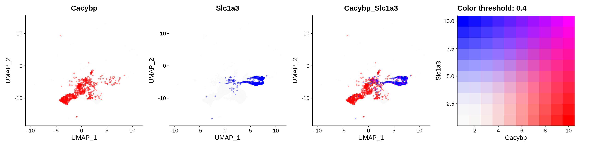
| Version | Author | Date |
|---|---|---|
| fd0e9b9 | Evgenii O. Tretiakov | 2024-06-09 |
FeaturePlot(astro,
blend = TRUE,
features = c("S100a6", "Gfap"))
| Version | Author | Date |
|---|---|---|
| fd0e9b9 | Evgenii O. Tretiakov | 2024-06-09 |
FeaturePlot(astro,
blend = TRUE,
features = c("Cacybp", "Gfap"))
| Version | Author | Date |
|---|---|---|
| fd0e9b9 | Evgenii O. Tretiakov | 2024-06-09 |
FeaturePlot(astro,
blend = TRUE,
features = c("S100a6", "Htra1"))
| Version | Author | Date |
|---|---|---|
| fd0e9b9 | Evgenii O. Tretiakov | 2024-06-09 |
FeaturePlot(astro,
blend = TRUE,
features = c("Cacybp", "Htra1"))
| Version | Author | Date |
|---|---|---|
| fd0e9b9 | Evgenii O. Tretiakov | 2024-06-09 |
FeaturePlot(astro,
blend = TRUE,
features = c("S100a6", "Aqp4"))
| Version | Author | Date |
|---|---|---|
| fd0e9b9 | Evgenii O. Tretiakov | 2024-06-09 |
FeaturePlot(astro,
blend = TRUE,
features = c("Cacybp", "Aqp4"))
| Version | Author | Date |
|---|---|---|
| fd0e9b9 | Evgenii O. Tretiakov | 2024-06-09 |
sessioninfo::session_info()─ Session info ───────────────────────────────────────────────────────────────
setting value
version R version 4.3.2 (2023-10-31)
os Ubuntu 22.04.3 LTS
system x86_64, linux-gnu
ui X11
language en_US:en
collate en_US.UTF-8
ctype en_US.UTF-8
tz Etc/UTC
date 2024-06-09
pandoc 3.1.3 @ /opt/python/3.8.8/bin/ (via rmarkdown)
─ Packages ───────────────────────────────────────────────────────────────────
package * version date (UTC) lib source
abind 1.4-5 2016-07-21 [2] RSPM (R 4.3.0)
annotate 1.80.0 2023-10-24 [2] RSPM (R 4.3.2)
AnnotationDbi 1.64.1 2023-11-03 [2] RSPM (R 4.3.2)
AnnotationFilter 1.26.0 2023-10-24 [2] RSPM (R 4.3.2)
Azimuth * 0.5.0 2024-01-27 [2] Github (satijalab/azimuth@243ee5d)
beeswarm 0.4.0 2021-06-01 [2] RSPM (R 4.3.0)
Biobase 2.62.0 2023-10-24 [2] RSPM (R 4.3.2)
BiocFileCache 2.10.1 2023-10-26 [2] RSPM (R 4.3.2)
BiocGenerics 0.48.1 2023-11-01 [2] RSPM (R 4.3.2)
BiocIO 1.12.0 2023-10-24 [2] RSPM (R 4.3.2)
BiocManager 1.30.22 2023-08-08 [2] RSPM (R 4.3.0)
BiocParallel 1.36.0 2023-10-24 [2] RSPM (R 4.3.2)
biomaRt 2.58.0 2023-10-24 [2] RSPM (R 4.3.2)
Biostrings 2.70.1 2023-10-25 [2] RSPM (R 4.3.2)
bit 4.0.5 2022-11-15 [2] RSPM (R 4.3.0)
bit64 4.0.5 2020-08-30 [2] RSPM (R 4.3.0)
bitops 1.0-7 2021-04-24 [2] RSPM (R 4.3.0)
blob 1.2.4 2023-03-17 [2] RSPM (R 4.3.0)
BPCells * 0.1.0 2024-01-27 [2] Github (bnprks/BPCells@0d56524)
BSgenome 1.70.1 2023-11-01 [2] RSPM (R 4.3.2)
BSgenome.Hsapiens.UCSC.hg38 1.4.5 2024-01-26 [2] RSPM (R 4.3.2)
bslib 0.6.1 2023-11-28 [2] RSPM (R 4.3.0)
cachem 1.0.8 2023-05-01 [2] RSPM (R 4.3.0)
callr 3.7.3 2022-11-02 [2] RSPM (R 4.3.0)
caTools 1.18.2 2021-03-28 [2] RSPM (R 4.3.0)
cellranger 1.1.0 2016-07-27 [2] RSPM (R 4.3.0)
circlize 0.4.16 2024-01-26 [2] Github (jokergoo/circlize@9b21578)
cli 3.6.2 2023-12-11 [2] RSPM (R 4.3.0)
cluster 2.1.6 2023-12-01 [2] RSPM (R 4.3.0)
CNEr 1.38.0 2023-10-24 [2] RSPM (R 4.3.2)
codetools 0.2-19 2023-02-01 [2] RSPM (R 4.3.0)
colorspace 2.1-0 2023-01-23 [2] RSPM (R 4.3.0)
cowplot * 1.1.3 2024-01-22 [2] RSPM (R 4.3.0)
crayon 1.5.2 2022-09-29 [2] RSPM (R 4.3.0)
curl 5.2.0 2023-12-08 [2] RSPM (R 4.3.0)
data.table 1.14.10 2023-12-08 [2] RSPM (R 4.3.0)
DBI 1.2.1 2024-01-12 [2] RSPM (R 4.3.0)
dbplyr 2.4.0 2023-10-26 [2] RSPM (R 4.3.0)
DelayedArray 0.28.0 2023-10-24 [2] RSPM (R 4.3.2)
deldir 2.0-2 2023-11-23 [2] RSPM (R 4.3.0)
digest 0.6.34 2024-01-11 [2] RSPM (R 4.3.0)
DirichletMultinomial 1.44.0 2023-10-24 [2] RSPM (R 4.3.2)
dotCall64 1.1-1 2023-11-28 [2] RSPM (R 4.3.0)
dplyr * 1.1.4 2023-11-17 [2] RSPM (R 4.3.0)
DT 0.31 2023-12-09 [2] RSPM (R 4.3.0)
ellipsis 0.3.2 2021-04-29 [2] RSPM (R 4.3.0)
EnsDb.Hsapiens.v86 2.99.0 2024-01-26 [2] RSPM (R 4.3.2)
ensembldb 2.26.0 2023-10-24 [2] RSPM (R 4.3.2)
evaluate 0.23 2023-11-01 [2] RSPM (R 4.3.0)
fansi 1.0.6 2023-12-08 [2] RSPM (R 4.3.0)
farver 2.1.1 2022-07-06 [2] RSPM (R 4.3.0)
fastDummies 1.7.3 2023-07-06 [2] RSPM (R 4.3.0)
fastmap 1.1.1 2023-02-24 [2] RSPM (R 4.3.0)
fastmatch 1.1-4 2023-08-18 [2] RSPM (R 4.3.0)
filelock 1.0.3 2023-12-11 [2] RSPM (R 4.3.0)
fitdistrplus 1.1-11 2023-04-25 [2] RSPM (R 4.3.0)
forcats 1.0.0 2023-01-29 [2] RSPM (R 4.3.0)
fs 1.6.3 2023-07-20 [2] RSPM (R 4.3.0)
future 1.33.1 2023-12-22 [2] RSPM (R 4.3.0)
future.apply 1.11.1 2023-12-21 [2] RSPM (R 4.3.0)
gargle 1.5.2 2023-07-20 [2] RSPM (R 4.3.0)
generics 0.1.3 2022-07-05 [2] RSPM (R 4.3.0)
GenomeInfoDb 1.38.5 2023-12-28 [2] RSPM (R 4.3.2)
GenomeInfoDbData 1.2.11 2024-01-26 [2] RSPM (R 4.3.2)
GenomicAlignments 1.38.2 2024-01-16 [2] RSPM (R 4.3.2)
GenomicFeatures 1.54.1 2023-10-29 [2] RSPM (R 4.3.2)
GenomicRanges 1.54.1 2023-10-29 [2] RSPM (R 4.3.2)
getPass 0.2-4 2023-12-10 [2] RSPM (R 4.3.0)
ggbeeswarm 0.7.2 2024-01-26 [2] Github (eclarke/ggbeeswarm@3cf58a9)
ggplot2 * 3.4.4.9000 2024-01-26 [2] Github (tidyverse/ggplot2@a4be39d)
ggprism 1.0.4 2024-01-26 [2] Github (csdaw/ggprism@0e411f4)
ggrastr 1.0.2 2024-01-26 [2] Github (VPetukhov/ggrastr@50ca3e0)
ggrepel 0.9.5.9999 2024-01-26 [2] Github (slowkow/ggrepel@1144585)
ggridges 0.5.6 2024-01-23 [2] RSPM (R 4.3.0)
git2r 0.33.0 2023-11-26 [2] RSPM (R 4.3.0)
GlobalOptions 0.1.2 2020-06-10 [2] RSPM (R 4.3.0)
globals 0.16.2 2022-11-21 [2] RSPM (R 4.3.0)
glue 1.7.0 2024-01-09 [2] RSPM (R 4.3.0)
GO.db 3.18.0 2024-01-26 [2] RSPM (R 4.3.2)
goftest 1.2-3 2021-10-07 [2] RSPM (R 4.3.0)
googledrive 2.1.1 2023-06-11 [2] RSPM (R 4.3.0)
googlesheets4 1.1.1 2023-06-11 [2] RSPM (R 4.3.0)
gridExtra 2.3 2017-09-09 [2] RSPM (R 4.3.0)
gtable 0.3.4 2023-08-21 [2] RSPM (R 4.3.0)
gtools 3.9.5 2023-11-20 [2] RSPM (R 4.3.0)
hdf5r 1.3.9 2024-01-14 [2] RSPM (R 4.3.2)
here * 1.0.1 2020-12-13 [2] RSPM (R 4.3.0)
highr 0.10 2022-12-22 [2] RSPM (R 4.3.0)
hms 1.1.3 2023-03-21 [2] RSPM (R 4.3.0)
htmltools 0.5.7 2023-11-03 [2] RSPM (R 4.3.0)
htmlwidgets 1.6.4 2023-12-06 [2] RSPM (R 4.3.0)
httpuv 1.6.13 2023-12-06 [2] RSPM (R 4.3.0)
httr 1.4.7 2023-08-15 [2] RSPM (R 4.3.0)
ica 1.0-3 2022-07-08 [2] RSPM (R 4.3.0)
igraph 1.6.0 2023-12-11 [2] RSPM (R 4.3.0)
IRanges 2.36.0 2023-10-24 [2] RSPM (R 4.3.2)
irlba 2.3.5.1 2022-10-03 [2] RSPM (R 4.3.0)
janitor 2.2.0.9000 2024-01-26 [2] Github (sfirke/janitor@ad52765)
JASPAR2020 0.99.10 2024-01-26 [2] RSPM (R 4.3.2)
jquerylib 0.1.4 2021-04-26 [2] RSPM (R 4.3.0)
jsonlite 1.8.8 2023-12-04 [2] RSPM (R 4.3.0)
KEGGREST 1.42.0 2023-10-24 [2] RSPM (R 4.3.2)
KernSmooth 2.23-22 2023-07-10 [2] RSPM (R 4.3.0)
knitr 1.45 2023-10-30 [2] RSPM (R 4.3.0)
labeling 0.4.3 2023-08-29 [2] RSPM (R 4.3.0)
later 1.3.2 2023-12-06 [2] RSPM (R 4.3.0)
lattice 0.22-5 2023-10-24 [2] RSPM (R 4.3.0)
lazyeval 0.2.2 2019-03-15 [2] RSPM (R 4.3.0)
leiden 0.4.3.1 2023-11-17 [2] RSPM (R 4.3.0)
lifecycle 1.0.4 2023-11-07 [2] RSPM (R 4.3.0)
listenv 0.9.0 2022-12-16 [2] RSPM (R 4.3.0)
lmtest 0.9-40 2022-03-21 [2] RSPM (R 4.3.0)
lubridate 1.9.3 2023-09-27 [2] RSPM (R 4.3.0)
magrittr * 2.0.3 2022-03-30 [2] RSPM (R 4.3.0)
MASS 7.3-60.0.1 2024-01-13 [2] RSPM (R 4.3.0)
Matrix 1.6-5 2024-01-11 [2] RSPM (R 4.3.0)
MatrixGenerics 1.14.0 2023-10-24 [2] RSPM (R 4.3.2)
matrixStats 1.2.0 2023-12-11 [2] RSPM (R 4.3.0)
memoise 2.0.1 2021-11-26 [2] RSPM (R 4.3.0)
mime 0.12 2021-09-28 [2] RSPM (R 4.3.0)
miniUI 0.1.1.1 2018-05-18 [2] RSPM (R 4.3.0)
mousecortexref.SeuratData * 1.0.0 2023-10-20 [1] local
munsell 0.5.0 2018-06-12 [2] RSPM (R 4.3.0)
nlme 3.1-164 2023-11-27 [2] RSPM (R 4.3.0)
paletteer 1.6.0 2024-01-21 [2] RSPM (R 4.3.0)
parallelly 1.36.0 2023-05-26 [2] RSPM (R 4.3.0)
patchwork * 1.2.0.9000 2024-01-26 [2] Github (thomasp85/patchwork@d943757)
pbapply 1.7-2 2023-06-27 [2] RSPM (R 4.3.0)
pillar 1.9.0 2023-03-22 [2] RSPM (R 4.3.0)
pkgconfig 2.0.3 2019-09-22 [2] RSPM (R 4.3.0)
plotly 4.10.4 2024-01-13 [2] RSPM (R 4.3.0)
plyr 1.8.9 2023-10-02 [2] RSPM (R 4.3.0)
png 0.1-8 2022-11-29 [2] RSPM (R 4.3.0)
polyclip 1.10-6 2023-09-27 [2] RSPM (R 4.3.0)
poweRlaw 0.80.0 2024-01-25 [2] RSPM (R 4.3.2)
pracma 2.4.4 2023-11-10 [2] RSPM (R 4.3.0)
presto 1.0.0 2024-01-26 [2] Github (immunogenomics/presto@31dc97f)
prettyunits 1.2.0 2023-09-24 [2] RSPM (R 4.3.0)
processx 3.8.3 2023-12-10 [2] RSPM (R 4.3.0)
progress 1.2.3 2023-12-06 [2] RSPM (R 4.3.0)
progressr 0.14.0 2023-08-10 [2] RSPM (R 4.3.0)
promises 1.2.1 2023-08-10 [2] RSPM (R 4.3.0)
ProtGenerics 1.34.0 2023-10-24 [2] RSPM (R 4.3.2)
ps 1.7.6 2024-01-18 [2] RSPM (R 4.3.0)
purrr 1.0.2 2023-08-10 [2] RSPM (R 4.3.0)
R.methodsS3 1.8.2 2022-06-13 [2] RSPM (R 4.3.0)
R.oo 1.26.0 2024-01-24 [2] RSPM (R 4.3.0)
R.utils 2.12.3 2023-11-18 [2] RSPM (R 4.3.0)
R6 2.5.1 2021-08-19 [2] RSPM (R 4.3.0)
RANN 2.6.1 2019-01-08 [2] RSPM (R 4.3.0)
rappdirs 0.3.3 2021-01-31 [2] RSPM (R 4.3.0)
RColorBrewer * 1.1-3 2022-04-03 [2] RSPM (R 4.3.0)
Rcpp 1.0.12 2024-01-09 [2] RSPM (R 4.3.0)
RcppAnnoy 0.0.22 2024-01-23 [2] RSPM (R 4.3.0)
RcppHNSW 0.5.0 2023-09-19 [2] RSPM (R 4.3.0)
RcppRoll 0.3.0 2018-06-05 [2] RSPM (R 4.3.0)
RCurl 1.98-1.14 2024-01-09 [2] RSPM (R 4.3.0)
readr * 2.1.5 2024-01-10 [2] RSPM (R 4.3.0)
rematch2 2.1.2 2020-05-01 [2] RSPM (R 4.3.0)
remotes 2.4.2.1 2023-07-18 [2] RSPM (R 4.3.0)
reshape2 1.4.4 2020-04-09 [2] RSPM (R 4.3.0)
restfulr 0.0.15 2022-06-16 [2] RSPM (R 4.3.2)
reticulate 1.34.0 2023-10-12 [2] RSPM (R 4.3.0)
rhdf5 2.46.1 2023-11-29 [2] RSPM (R 4.3.2)
rhdf5filters 1.14.1 2023-11-06 [2] RSPM (R 4.3.2)
Rhdf5lib 1.24.1 2023-12-11 [2] RSPM (R 4.3.2)
rjson 0.2.21 2022-01-09 [2] RSPM (R 4.3.0)
rlang 1.1.3 2024-01-10 [2] RSPM (R 4.3.0)
rmarkdown 2.25 2023-09-18 [2] RSPM (R 4.3.0)
ROCR 1.0-11 2020-05-02 [2] RSPM (R 4.3.0)
rprojroot 2.0.4 2023-11-05 [2] RSPM (R 4.3.0)
Rsamtools 2.18.0 2023-10-24 [2] RSPM (R 4.3.2)
RSpectra 0.16-1 2022-04-24 [2] RSPM (R 4.3.0)
RSQLite 2.3.5 2024-01-21 [2] RSPM (R 4.3.0)
rstudioapi 0.15.0 2023-07-07 [2] RSPM (R 4.3.0)
rsvd 1.0.5 2021-04-16 [2] RSPM (R 4.3.0)
rtracklayer 1.62.0 2024-01-26 [2] bioc_git2r (@58efbf9)
Rtsne 0.17 2023-12-07 [2] RSPM (R 4.3.0)
S4Arrays 1.2.0 2023-10-24 [2] RSPM (R 4.3.2)
S4Vectors 0.40.2 2023-11-23 [2] RSPM (R 4.3.2)
sass 0.4.8 2023-12-06 [2] RSPM (R 4.3.0)
scales 1.3.0 2023-11-28 [2] RSPM (R 4.3.0)
scattermore 1.2 2023-06-12 [2] RSPM (R 4.3.0)
scCustomize * 2.0.1 2024-01-26 [2] Github (samuel-marsh/scCustomize@0aefbe9)
sctransform 0.4.1 2023-10-19 [2] RSPM (R 4.3.0)
seqLogo 1.68.0 2023-10-24 [2] RSPM (R 4.3.2)
sessioninfo 1.2.2 2021-12-06 [2] RSPM (R 4.3.0)
Seurat * 5.0.1.9003 2024-01-27 [2] Github (satijalab/seurat@938698c)
SeuratData * 0.2.2.9001 2024-01-26 [2] Github (satijalab/seurat-data@4dc08e0)
SeuratDisk 0.0.0.9021 2024-01-26 [2] Github (mojaveazure/seurat-disk@877d4e1)
SeuratObject * 5.0.1 2024-01-27 [2] Github (satijalab/seurat-object@4d3739b)
SeuratWrappers * 0.3.3 2024-01-26 [2] Github (satijalab/seurat-wrappers@17b8d5a)
shape 1.4.6 2021-05-19 [2] RSPM (R 4.3.0)
shiny 1.8.0 2023-11-17 [2] RSPM (R 4.3.0)
shinyBS * 0.61.1 2022-04-17 [2] RSPM (R 4.3.0)
shinydashboard 0.7.2 2021-09-30 [2] RSPM (R 4.3.0)
shinyjs 2.1.0 2021-12-23 [2] RSPM (R 4.3.0)
Signac 1.12.9004 2024-01-27 [2] Github (stuart-lab/signac@0c43d88)
snakecase 0.11.1 2023-08-27 [2] RSPM (R 4.3.0)
sp * 2.1-2 2023-11-26 [2] RSPM (R 4.3.0)
spam 2.10-0 2023-10-23 [2] RSPM (R 4.3.0)
SparseArray 1.2.3 2023-12-25 [2] RSPM (R 4.3.2)
spatstat.data 3.0-4 2024-01-15 [2] RSPM (R 4.3.0)
spatstat.explore 3.2-5 2023-10-22 [2] RSPM (R 4.3.0)
spatstat.geom 3.2-7 2023-10-20 [2] RSPM (R 4.3.0)
spatstat.random 3.2-2 2023-11-29 [2] RSPM (R 4.3.0)
spatstat.sparse 3.0-3 2023-10-24 [2] RSPM (R 4.3.0)
spatstat.utils 3.0-4 2023-10-24 [2] RSPM (R 4.3.0)
stringi 1.8.3 2023-12-11 [2] RSPM (R 4.3.0)
stringr * 1.5.1 2023-11-14 [2] RSPM (R 4.3.0)
SummarizedExperiment 1.32.0 2023-10-24 [2] RSPM (R 4.3.2)
survival 3.5-7 2023-08-14 [2] RSPM (R 4.3.0)
tensor 1.5 2012-05-05 [2] RSPM (R 4.3.0)
TFBSTools 1.40.0 2023-10-24 [2] RSPM (R 4.3.2)
TFMPvalue 0.0.9 2022-10-21 [2] RSPM (R 4.3.0)
tibble 3.2.1 2023-03-20 [2] RSPM (R 4.3.0)
tidyr 1.3.1 2024-01-24 [2] RSPM (R 4.3.0)
tidyselect 1.2.0 2022-10-10 [2] RSPM (R 4.3.0)
timechange 0.3.0 2024-01-18 [2] RSPM (R 4.3.0)
tzdb 0.4.0 2023-05-12 [2] RSPM (R 4.3.0)
utf8 1.2.4 2023-10-22 [2] RSPM (R 4.3.0)
uwot 0.1.16 2023-06-29 [2] RSPM (R 4.3.0)
vctrs 0.6.5 2023-12-01 [2] RSPM (R 4.3.0)
vipor 0.4.7 2023-12-18 [2] RSPM (R 4.3.0)
viridisLite 0.4.2 2023-05-02 [2] RSPM (R 4.3.0)
vroom 1.6.5 2023-12-05 [2] RSPM (R 4.3.0)
whisker 0.4.1 2022-12-05 [2] RSPM (R 4.3.0)
withr 3.0.0 2024-01-16 [2] RSPM (R 4.3.0)
workflowr * 1.7.1 2023-08-23 [2] RSPM (R 4.3.0)
xfun 0.41 2023-11-01 [2] RSPM (R 4.3.0)
XML 3.99-0.16.1 2024-01-22 [2] RSPM (R 4.3.0)
xml2 1.3.6 2023-12-04 [2] RSPM (R 4.3.0)
xtable 1.8-4 2019-04-21 [2] RSPM (R 4.3.0)
XVector 0.42.0 2023-10-24 [2] RSPM (R 4.3.2)
yaml 2.3.8 2023-12-11 [2] RSPM (R 4.3.0)
zlibbioc 1.48.0 2023-10-24 [2] RSPM (R 4.3.2)
zoo 1.8-12 2023-04-13 [2] RSPM (R 4.3.0)
[1] /home/etretiakov/R/x86_64-pc-linux-gnu-library/4.3
[2] /opt/R/4.3.2/lib/R/library
─ Python configuration ───────────────────────────────────────────────────────
python: /opt/python/3.8.8/bin/python
libpython: /opt/python/3.8.8/lib/libpython3.8.so
pythonhome: /opt/python/3.8.8:/opt/python/3.8.8
version: 3.8.8 | packaged by conda-forge | (default, Feb 20 2021, 16:22:27) [GCC 9.3.0]
numpy: /opt/python/3.8.8/lib/python3.8/site-packages/numpy
numpy_version: 1.23.5
leidenalg: /opt/python/3.8.8/lib/python3.8/site-packages/leidenalg
NOTE: Python version was forced by RETICULATE_PYTHON
──────────────────────────────────────────────────────────────────────────────
sessionInfo()R version 4.3.2 (2023-10-31)
Platform: x86_64-pc-linux-gnu (64-bit)
Running under: Ubuntu 22.04.3 LTS
Matrix products: default
BLAS: /usr/lib/x86_64-linux-gnu/openblas-pthread/libblas.so.3
LAPACK: /usr/lib/x86_64-linux-gnu/openblas-pthread/libopenblasp-r0.3.20.so; LAPACK version 3.10.0
locale:
[1] LC_CTYPE=en_US.UTF-8 LC_NUMERIC=C
[3] LC_TIME=en_US.UTF-8 LC_COLLATE=en_US.UTF-8
[5] LC_MONETARY=en_US.UTF-8 LC_MESSAGES=en_US.UTF-8
[7] LC_PAPER=en_US.UTF-8 LC_NAME=C
[9] LC_ADDRESS=C LC_TELEPHONE=C
[11] LC_MEASUREMENT=en_US.UTF-8 LC_IDENTIFICATION=C
time zone: Etc/UTC
tzcode source: system (glibc)
attached base packages:
[1] stats graphics grDevices utils datasets methods base
other attached packages:
[1] patchwork_1.2.0.9000 cowplot_1.1.3
[3] ggplot2_3.4.4.9000 readr_2.1.5
[5] stringr_1.5.1 magrittr_2.0.3
[7] dplyr_1.1.4 BPCells_0.1.0
[9] Azimuth_0.5.0 shinyBS_0.61.1
[11] SeuratWrappers_0.3.3 mousecortexref.SeuratData_1.0.0
[13] SeuratData_0.2.2.9001 scCustomize_2.0.1
[15] Seurat_5.0.1.9003 SeuratObject_5.0.1
[17] sp_2.1-2 RColorBrewer_1.1-3
[19] here_1.0.1 workflowr_1.7.1
loaded via a namespace (and not attached):
[1] IRanges_2.36.0 R.methodsS3_1.8.2
[3] vroom_1.6.5 progress_1.2.3
[5] poweRlaw_0.80.0 goftest_1.2-3
[7] DT_0.31 Biostrings_2.70.1
[9] vctrs_0.6.5 spatstat.random_3.2-2
[11] digest_0.6.34 png_0.1-8
[13] shape_1.4.6 git2r_0.33.0
[15] ggrepel_0.9.5.9999 deldir_2.0-2
[17] parallelly_1.36.0 MASS_7.3-60.0.1
[19] Signac_1.12.9004 reshape2_1.4.4
[21] httpuv_1.6.13 BiocGenerics_0.48.1
[23] withr_3.0.0 ggrastr_1.0.2
[25] xfun_0.41 ellipsis_0.3.2
[27] survival_3.5-7 EnsDb.Hsapiens.v86_2.99.0
[29] memoise_2.0.1 ggbeeswarm_0.7.2
[31] janitor_2.2.0.9000 zoo_1.8-12
[33] GlobalOptions_0.1.2 gtools_3.9.5
[35] pbapply_1.7-2 R.oo_1.26.0
[37] prettyunits_1.2.0 rematch2_2.1.2
[39] KEGGREST_1.42.0 promises_1.2.1
[41] httr_1.4.7 restfulr_0.0.15
[43] rhdf5filters_1.14.1 globals_0.16.2
[45] fitdistrplus_1.1-11 rhdf5_2.46.1
[47] ps_1.7.6 rstudioapi_0.15.0
[49] miniUI_0.1.1.1 generics_0.1.3
[51] processx_3.8.3 curl_5.2.0
[53] S4Vectors_0.40.2 zlibbioc_1.48.0
[55] polyclip_1.10-6 GenomeInfoDbData_1.2.11
[57] SparseArray_1.2.3 xtable_1.8-4
[59] pracma_2.4.4 evaluate_0.23
[61] S4Arrays_1.2.0 BiocFileCache_2.10.1
[63] hms_1.1.3 GenomicRanges_1.54.1
[65] irlba_2.3.5.1 colorspace_2.1-0
[67] filelock_1.0.3 hdf5r_1.3.9
[69] ROCR_1.0-11 reticulate_1.34.0
[71] spatstat.data_3.0-4 lmtest_0.9-40
[73] snakecase_0.11.1 later_1.3.2
[75] lattice_0.22-5 spatstat.geom_3.2-7
[77] future.apply_1.11.1 getPass_0.2-4
[79] scattermore_1.2 XML_3.99-0.16.1
[81] matrixStats_1.2.0 RcppAnnoy_0.0.22
[83] pillar_1.9.0 nlme_3.1-164
[85] caTools_1.18.2 compiler_4.3.2
[87] RSpectra_0.16-1 stringi_1.8.3
[89] tensor_1.5 SummarizedExperiment_1.32.0
[91] lubridate_1.9.3 GenomicAlignments_1.38.2
[93] plyr_1.8.9 crayon_1.5.2
[95] abind_1.4-5 BiocIO_1.12.0
[97] googledrive_2.1.1 bit_4.0.5
[99] fastmatch_1.1-4 whisker_0.4.1
[101] codetools_0.2-19 bslib_0.6.1
[103] paletteer_1.6.0 plotly_4.10.4
[105] mime_0.12 splines_4.3.2
[107] circlize_0.4.16 Rcpp_1.0.12
[109] fastDummies_1.7.3 dbplyr_2.4.0
[111] cellranger_1.1.0 knitr_1.45
[113] blob_1.2.4 utf8_1.2.4
[115] seqLogo_1.68.0 AnnotationFilter_1.26.0
[117] fs_1.6.3 listenv_0.9.0
[119] tibble_3.2.1 Matrix_1.6-5
[121] callr_3.7.3 tzdb_0.4.0
[123] pkgconfig_2.0.3 tools_4.3.2
[125] cachem_1.0.8 RSQLite_2.3.5
[127] viridisLite_0.4.2 DBI_1.2.1
[129] fastmap_1.1.1 rmarkdown_2.25
[131] scales_1.3.0 grid_4.3.2
[133] ica_1.0-3 shinydashboard_0.7.2
[135] Rsamtools_2.18.0 sass_0.4.8
[137] ggprism_1.0.4 BiocManager_1.30.22
[139] dotCall64_1.1-1 RANN_2.6.1
[141] farver_2.1.1 yaml_2.3.8
[143] MatrixGenerics_1.14.0 rtracklayer_1.62.0
[145] cli_3.6.2 purrr_1.0.2
[147] stats4_4.3.2 leiden_0.4.3.1
[149] lifecycle_1.0.4 uwot_0.1.16
[151] Biobase_2.62.0 sessioninfo_1.2.2
[153] presto_1.0.0 BSgenome.Hsapiens.UCSC.hg38_1.4.5
[155] BiocParallel_1.36.0 annotate_1.80.0
[157] timechange_0.3.0 gtable_0.3.4
[159] rjson_0.2.21 ggridges_0.5.6
[161] progressr_0.14.0 parallel_4.3.2
[163] jsonlite_1.8.8 RcppHNSW_0.5.0
[165] TFBSTools_1.40.0 bitops_1.0-7
[167] bit64_4.0.5 Rtsne_0.17
[169] spatstat.utils_3.0-4 CNEr_1.38.0
[171] highr_0.10 jquerylib_0.1.4
[173] shinyjs_2.1.0 SeuratDisk_0.0.0.9021
[175] R.utils_2.12.3 lazyeval_0.2.2
[177] shiny_1.8.0 htmltools_0.5.7
[179] GO.db_3.18.0 sctransform_0.4.1
[181] rappdirs_0.3.3 ensembldb_2.26.0
[183] glue_1.7.0 TFMPvalue_0.0.9
[185] spam_2.10-0 googlesheets4_1.1.1
[187] XVector_0.42.0 RCurl_1.98-1.14
[189] rprojroot_2.0.4 BSgenome_1.70.1
[191] gridExtra_2.3 JASPAR2020_0.99.10
[193] igraph_1.6.0 R6_2.5.1
[195] tidyr_1.3.1 labeling_0.4.3
[197] forcats_1.0.0 RcppRoll_0.3.0
[199] GenomicFeatures_1.54.1 cluster_2.1.6
[201] Rhdf5lib_1.24.1 gargle_1.5.2
[203] GenomeInfoDb_1.38.5 DirichletMultinomial_1.44.0
[205] DelayedArray_0.28.0 tidyselect_1.2.0
[207] vipor_0.4.7 ProtGenerics_1.34.0
[209] xml2_1.3.6 AnnotationDbi_1.64.1
[211] future_1.33.1 rsvd_1.0.5
[213] munsell_0.5.0 KernSmooth_2.23-22
[215] data.table_1.14.10 htmlwidgets_1.6.4
[217] biomaRt_2.58.0 rlang_1.1.3
[219] spatstat.sparse_3.0-3 spatstat.explore_3.2-5
[221] remotes_2.4.2.1 fansi_1.0.6
[223] beeswarm_0.4.0